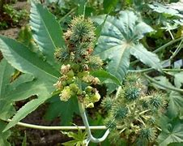

Basonym of Drug
Eranda
Main Synonym
- Urubaka
- Panchangula
- Vardhamana
- Vyadambaka
- Vyaghrapuccha
- Aamanda
- Gandharvahasta
Regional Name
- Bengali: Bherenda
- Gujarati: Diveliyo, Aerando
- Hindi: Eranda
- Tamil: Amanakku
- Telugu: Amadamu
- English: Castor
- Malyalam: Avanakku
Botanical Name
Ricinus communis
Family
Euphorbiaceae
Classification (Gana)
- Aacharya Charaka: Bhedaniya, Angamardaprashamana, Swedopaga Mahakashaya
- Acharya Sushruta: Vidarigandhadi, Adhobhagahara, Vatasamsamana Gana
- Acharya Vagbhata: Vidarigandhadi
External Morphology
3-5 meter high shrub
Useful Parts
Important Phytoconstituent
Lupeol, Lipids, Ricinine, Ricinoluc, Arachidic
Rasa Panchak
- Rasa: Madhura, Katu, Kashaya
- Guna: Snigdha, Tikshna, Sukshma
- Virya: Ushna
- Vipaka: Madhura
Action
Vatakaphahara
Therapeutic Indication
- Rechana (Purgative)
- Vrushya (Aphrodisiac)
- Vatavyadhihara (Useful in Neural Disorders)
- Udavartahara (Useful in Stomach Disorders)
Therapeutic Uses
- Katishoola - Application of castor oil on back, then heat the leaves on the pan, apply to the back as a fomentation, it is helpful in back pain.
- Slipada - Eranda oil with cow urine with the diet of rice and milk is beneficial in filariasis.
- Kasa - Eranda leaves with trikatu powder, oil, and jaggery are useful to treat cough.
Dose
- Root Powder: 3-5 gm
- Decoction: 50-100 ml
- Seed Oil: 5-10 ml
Formulations
- Hingu Triguna Taila
- Simhanada Guggulu
- Rasnaerandadi Kashaya
- Vatari Guggulu
- Gandharvahastadi Taila
Adverse Effect
Seeds are toxic in large amounts, causing abdominal discomfort, vomiting, and sometimes eye inflammations.
Remedial Measure
Gastric lavage and symptomatic treatment
Purification
Boil the castor seeds in coconut water for 3 hours. After that, sundried and preserved.